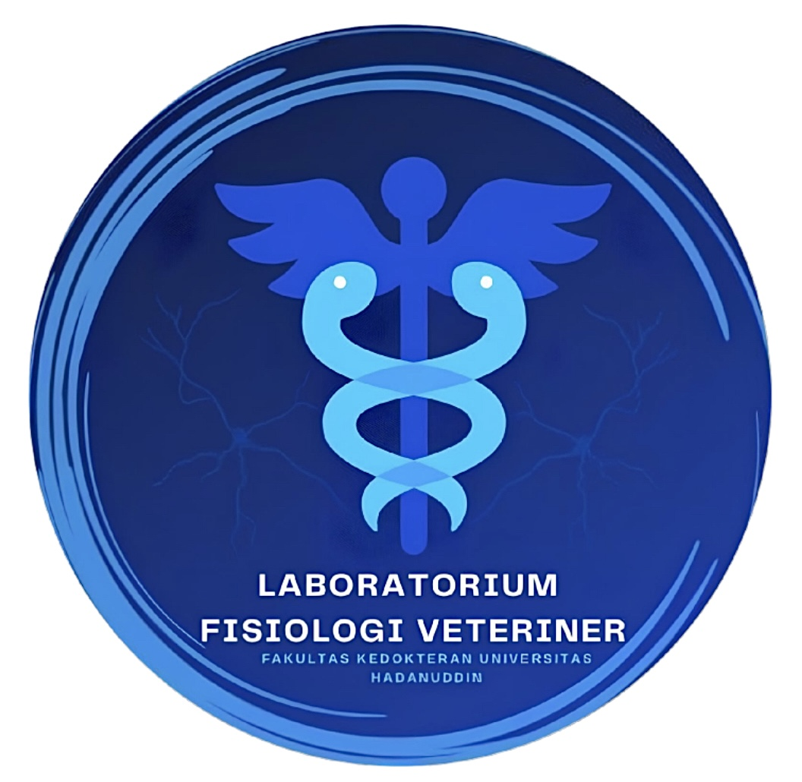

Program Studi Kedokteran HewanFakultas Kedokteran, Universitas Hasanuddin
Sistem Saraf & Otot Skelet
Sistem Indra
Sistem Kardiovaskular
Darah
Sistem Endokrin
Sistem Respirasi
Sistem Pencernaan & Ekskresi
Metabolisme & Thermoregulasi
Sistem Reproduksi
Fisiologi Satwa Akuatik